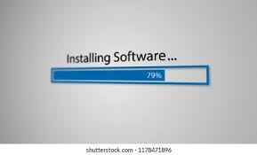
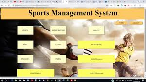

What We Offer
Website Design & Development
In today's digital era, having a strong online presence is essential for any business or organization to thrive. At Dwight Tech Solution, we specialize in designing and developing custom websites that are not only visually stunning but also highly functional and user-friendly. Our websites are fully responsive, meaning they look and perform flawlessly on desktops, tablets, and smartphones alike. We work closely with you to understand your unique goals, branding, and audience, ensuring the final product reflects your vision and drives engagement. Whether you need a simple brochure site, an e-commerce platform, or a dynamic content management system, our expert team delivers tailored solutions that grow your business and enhance your credibility online.
IT Consultancy
Technology is constantly evolving, and staying ahead requires more than just having the right tools — it demands smart strategies and expert guidance. Our IT consultancy services are designed to help your business navigate complex technology landscapes with confidence. We assess your existing infrastructure, identify bottlenecks, and recommend solutions that maximize efficiency and reduce costs. From cloud migration and cybersecurity to software selection and workflow automation, we provide comprehensive advice tailored to your specific industry and business needs. Our goal is to empower you to leverage technology as a competitive advantage, enhance operational resilience, and ensure your IT investments deliver real value over the long term.
Software Installation
Installing and configuring software might seem straightforward, but improper setups can lead to compatibility issues, security vulnerabilities, and frustrating downtime. At Dwight Tech Solution, we offer professional software installation services that go beyond simple deployment. Our experienced technicians handle everything from initial installation and licensing to custom configuration and integration with your existing systems. We ensure your software operates optimally, is secure, and meets your performance requirements. Whether it’s office suites, specialized business applications, or security software, we provide ongoing support to keep your systems running smoothly, so you can focus on your core operations without interruption.
Networking Services

Reliable and secure networking infrastructure is the backbone of any modern organization, enabling seamless communication, data transfer, and collaboration. Our networking services cover everything from designing custom wired and wireless networks to installing routers, switches, firewalls, and other essential equipment. We assess your space and business needs to create efficient network topologies that maximize coverage and speed. Additionally, we prioritize network security by implementing best practices to protect your data against unauthorized access and cyber threats. Whether setting up a small office network or a large enterprise environment, we deliver scalable solutions and ongoing maintenance to ensure your connectivity is always fast, stable, and secure.
Office Installation
Setting up a modern office requires more than just placing desks and chairs. It involves careful planning and installation of essential equipment and IT systems that allow your team to work productively from day one. Dwight Tech Solution offers full office installation services, including setup of desktop computers, printers, network devices, telecommunication systems, and more. We ensure that every device is properly configured, connected, and optimized for your workflow. Our team also provides training and documentation to help your staff get up to speed quickly. From small startups to large organizations, we help you create a technology-enabled workspace that supports growth, collaboration, and efficiency.
Photocopying
Whether you need a few copies or bulk document reproduction, our photocopying services deliver professional, high-quality results every time. Equipped with advanced machines capable of handling documents of various sizes and types, we guarantee sharp, clear copies with quick turnaround times. Our services are perfect for businesses, schools, events, and organizations needing dependable document duplication without hassle. We also offer options for color copying, double-sided printing, and custom finishing to meet your exact needs. Trust Dwight Tech Solution for efficient, affordable, and reliable photocopying solutions that keep your operations running smoothly.
Laminating
Protect your important documents, certificates, photos, and more with our professional lamination services. Laminating adds a durable, water-resistant, and tear-proof layer that preserves your documents for years to come. Ideal for menus, signage, ID cards, teaching materials, and important paperwork, our lamination ensures your items remain clean and presentable even under frequent handling. We use high-quality laminating films and advanced equipment to deliver a flawless finish every time. Enhance the lifespan and appearance of your documents with Dwight Tech Solution’s expert lamination services.
Video Editing
Videos are a powerful tool to communicate your message, promote your brand, and engage your audience. At Dwight Tech Solution, our professional video editing services transform raw footage into polished, compelling videos tailored to your goals. Whether it’s for corporate presentations, advertisements, events, or personal projects, we handle editing, color correction, sound design, special effects, and more. We work closely with you to understand your vision and deliver final videos that capture attention, convey emotion, and leave a lasting impression. Boost your storytelling with expertly edited videos that stand out across social media, websites, and presentations.
Flyer Design
Effective flyers are an affordable and impactful way to promote your events, products, or services. Our creative flyer design services focus on eye-catching visuals, clear messaging, and strategic layouts that grab attention and motivate action. Whether you're advertising a birthday party, church event, business promotion, or community gathering, we tailor each design to your target audience and branding guidelines. We also provide print-ready files or printing services to ensure your flyers look great in hand. Let us help you spread your message loud and clear with professionally designed flyers that make an impression.
Banner Printing
Make your message larger than life with vibrant, durable banners printed for both indoor and outdoor use. Our banner printing services utilize high-quality materials and inks to produce vivid colors and sharp images that withstand weather and wear. Perfect for business promotions, events, exhibitions, and celebrations, our banners come in various sizes and finishes to suit your needs. We handle everything from design consultation to printing and finishing, ensuring you get a professional product that commands attention wherever it’s displayed.
Tech Products

We offer a wide range of reliable, high-quality tech products designed to support your everyday business and personal technology needs. From powerful desktop computers and laptops to networking devices like routers and switches, as well as printers, scanners, and essential office accessories, we source products that combine performance with affordability. Our knowledgeable team can help you select the right products based on your requirements and budget, ensuring you get the best value and technology that helps you work smarter, not harder.
School Database System
Managing school data efficiently is crucial to providing quality education and smooth administration. Our custom-built School Database System is designed to handle all aspects of school management, including student enrollment, attendance tracking, grade management, staff records, and report generation. This comprehensive platform reduces paperwork, improves data accuracy, and allows quick access to important information. With user-friendly interfaces and secure data storage, schools can streamline daily operations, enhance communication with parents and teachers, and focus more on student development. Whether you run a small nursery or a large educational institution, our system scales to meet your unique needs.
Sports Management System
Organizing sports activities can be complex without the right tools. Our Sports Management System simplifies team and league administration by providing features such as player registration, team creation, scheduling games and practices, tracking individual and team statistics, and managing tournament brackets. Designed for schools, clubs, and sports organizations, the system improves communication among coaches, players, and parents while providing detailed performance insights. With automated notifications and easy-to-use dashboards, managing your sports programs becomes efficient, professional, and enjoyable. Boost your athletes' experience and your organization’s productivity with our tailored solution.
More Than Just Services – A Commitment to Excellence
At Dwight Tech Solution, we do more than just offer services — we build strong relationships, develop practical solutions, and drive continuous innovation. Think of us as your tech partner who doesn’t just write code but writes success stories. Just like a well-structured Python program, every client project starts with a clear definition, careful planning, and a return value that exceeds expectations.
Our passion for technology is matched by our dedication to your satisfaction. Whether you need personalized tech training like an interactive tutorial(), on-site technical support (like real-time event handlers), or a fully customized digital platform, we’re here to help. We don’t just deliver output — we deliver results that are tested, debugged, and optimized for performance.
We believe in empowering businesses, schools, and individuals with the right tools, skills, and systems. It's like writing efficient Python code: you need the right modules, clean functions, and a well-planned main() block to get things running smoothly. From creative consultation and strategic planning to implementation and post-launch support, Dwight Tech Solution is your trusted partner on the journey to digital transformation.
Even beyond what you see here, we constantly expand our service list, like adding new features to a growing codebase. We stay up to date with new tech trends — because just like updating your Python libraries, staying current is essential. Got a custom idea, a challenging bug, or a dream project you want to launch? Bring it to us. We’ll import innovation, define solutions(), and return success.
At Dwight Tech Solution, we don’t just meet expectations — we exceed them. We go beyond, just like a function that keeps returning value long after it’s called. Partner with us, and let’s execute excellence together.